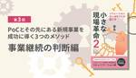

株式会社モンスターラボ
https://monstar-lab.com/dx
Monstarlab DXブログでは、DX推進に役立つ最新テクノロジー活用資料を提供しています。貴社の課題解決のためにぜひご活用ください。
フィード

PoCとその先にある新規事業を成功に導く３つのメソッド−事業継続の判断編−
株式会社モンスターラボ
はじめに 〜本記事について〜 モンスターラボの社員より・ソリューションアーキテクトが起こす、小さな現場革命 〜「炎上案件 ゼロ」を実現する上流工程の仕事術〜 (2023年11月発刊）・ソリューションアーキテクトが起こす、 […]The post PoCとその先にある新規事業を成功に導く３つのメソッド−事業継続の判断編− first appeared on 株式会社モンスターラボ.
5日前
LLM Loopとは？うまく活用して社内の生成AI活用を加速させよう 1
1
株式会社モンスターラボ
近年、生成AIの発展と普及に伴い、多くの企業がその活用を模索しています。しかし、実際の業務への導入には様々な課題が存在することも事実です。モンスターラボでは、こうした課題に対応し、企業の生成AI活用をサポートするソリュー […]The post LLM Loopとは？うまく活用して社内の生成AI活用を加速させよう first appeared on 株式会社モンスターラボ.
11日前

【企業のDX成熟度を測定する】DXケイパビリティ評価
株式会社モンスターラボ
モンスターラボの提供するサービス「DXケイパビリティ評価」では、25のケイパビリティから構成される評価基準によりお客さまの持つDXケイパビリティを集計・分析し、モンスターラボが持つグローバル調査データと比較することで、市 […]The post 【企業のDX成熟度を測定する】DXケイパビリティ評価 first appeared on 株式会社モンスターラボ.
16日前
サービスブループリントとは？メリットや作り方をわかりやすく解説
株式会社モンスターラボ
サービスブループリントは、サービス業務の全体像を一目で把握できるツールです。顧客の行動、スタッフのアクション、内部プロセスを可視化し、情報共有や改善を行います。本記事では、サービスブループリントのメリットや基本的な構成要 […]The post サービスブループリントとは？メリットや作り方をわかりやすく解説 first appeared on 株式会社モンスターラボ.
17日前
【ウェビナー 2024.08.08】UXデザインをサービス／プロダクトに適用する方法
株式会社モンスターラボ
お申し込みフォームはこちら セミナーの概要 テーマ UXデザインをサービス／プロダクトに適用する方法 最適な顧客体験を実現するには 受講料 無料 日時 2024年8月8日(木) 12:30~13:30 主催社 株式会社 […]The post 【ウェビナー 2024.08.08】UXデザインをサービス／プロダクトに適用する方法 first appeared on 株式会社モンスターラボ.
20日前
【アーカイブ配信 8/14(水)】DXプロジェクト事例で見る アジャイル手法の進め方
株式会社モンスターラボ
お申し込みフォームはこちら セミナーの概要 テーマ DXプロジェクト事例で見るアジャイル手法の進め方 受講料 無料 日時 2024年8月14日(水) 11:00~12:00 主催者 株式会社モンスターラボ 登壇者 加藤 […]The post 【アーカイブ配信 8/14(水)】DXプロジェクト事例で見る アジャイル手法の進め方 first appeared on 株式会社モンスターラボ.
21日前
【アーカイブ配信 8/14(水)】アジャイル事例で見る 事業をスケールさせる現場力の磨き方
株式会社モンスターラボ
お申し込みフォームはこちら セミナーの概要 テーマ アジャイル事例で見る 事業をスケールさせる現場力の磨き方 受講料 無料 日時 2024年8月14日(水) 15:00~16:00 主催者 株式会社モンスターラボ 登壇者 […]The post 【アーカイブ配信 8/14(水)】アジャイル事例で見る 事業をスケールさせる現場力の磨き方 first appeared on 株式会社モンスターラボ.
22日前
デザイン経営とは？効果や具体的な実践方法、成功事例まで解説
株式会社モンスターラボ
デザイン経営は、企業の競争力を高めるための革新的なアプローチとして注目を集めています。従来の経営手法では解決できない複雑な問題や課題に対して、新しい視点と手法が必要とされる現代において、デザイン経営はその解決策となり得る […]The post デザイン経営とは？効果や具体的な実践方法、成功事例まで解説 first appeared on 株式会社モンスターラボ.
23日前
【ウェビナー 8/15(木)】DX推進を加速させるサービス設計・UXデザイン
株式会社モンスターラボ
お申し込みフォームはこちら セミナーの概要 テーマ DX推進を加速させるサービス設計・UXデザイン 受講料 無料 日時 2024年8月15日(木) 11:00~12:00 主催社 株式会社モンスターラボ 登壇者 津山 拓 […]The post 【ウェビナー 8/15(木)】DX推進を加速させるサービス設計・UXデザイン first appeared on 株式会社モンスターラボ.
24日前
【ウェビナー 8/15(木)】あらゆる組織に、テクノロジー実装力を〜デジタル変革を実現するために必要な組織能力を向上させる方法〜
株式会社モンスターラボ
お申し込みフォームはこちら セミナーの概要 テーマ あらゆる組織に、テクノロジー実装力を〜デジタル変革を実現するために必要な組織能力を向上させる方法〜 受講料 無料 日時 2024年8月15日(木) 13:30~14:3 […]The post 【ウェビナー 8/15(木)】あらゆる組織に、テクノロジー実装力を〜デジタル変革を実現するために必要な組織能力を向上させる方法〜 first appeared on 株式会社モンスターラボ.
25日前
【アーカイブ配信 8/20（火）】アプリ施策が決まったら知りたい 成功するアプリの基本のフレームワーク
株式会社モンスターラボ
お申し込みフォームはこちら セミナーの概要 テーマ アプリ施策が決まったら知りたい 成功するアプリの基本のフレームワーク 受講料 無料 日時 2024年8月20日(火) 11:00~12:00 主催者 株式会社モンスター […]The post 【アーカイブ配信 8/20（火）】アプリ施策が決まったら知りたい 成功するアプリの基本のフレームワーク first appeared on 株式会社モンスターラボ.
25日前
【アーカイブ配信 8/21(水)】DX成功の鍵は、デザインの力で事業・組織を変えること
株式会社モンスターラボ
お申し込みフォームはこちら セミナーの概要 テーマ DX成功の鍵は、デザインの力で事業・組織を変えること 受講料 無料 日時 2024年8月21日(水) 11:00~12:00 主催者 株式会社モンスターラボ 登壇者 神 […]The post 【アーカイブ配信 8/21(水)】DX成功の鍵は、デザインの力で事業・組織を変えること first appeared on 株式会社モンスターラボ.
1ヶ月前